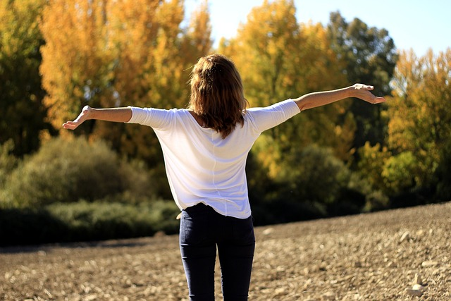
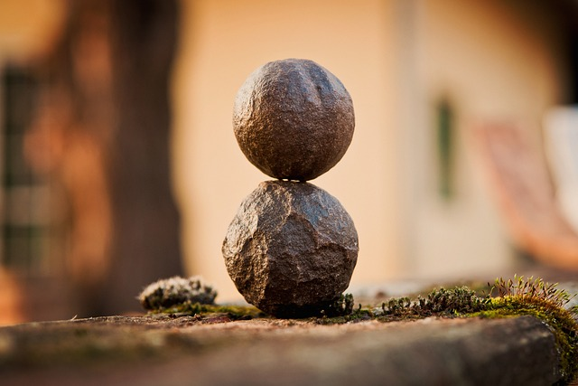

<div class="container container-curso">
    <div class="row">
      <div class="col-md-6">
        <h3 style="color: #333; margin-top: 30px;">{{cursos.nombre}}</h3>
        <p style="color: #555; margin-bottom: 30px;">{{cursos.descripcion}}</p>
      </div>
      <div class="col-md-6">
        
      </div>
    </div>
      <div class="row" >
        <div class="col-md-4 container-material" *ngFor="let item of material">
          <h4 style="color: #333; margin-top: 30px;">{{item.nombre}}</h4>
          
          <p style="color: #555; margin-bottom: 30px;">{{item.descripcion}}</p>
          <button class="btn btn-primary" (click)="redirectMaterial(item.id)"  style="margin-bottom: 30px; border-radius: 25px;">Ingresar al material</button>
        </div>    
      </div>
  </div>

  
  <!-- <div *ngIf="cursos">
    <h1>Hola</h1>
  </div> -->

  <!-- <div class="col-md-4 container-material">
    <h4 style="color: #333; margin-top: 30px;">Desarrollo de habilidades de mindfulness: concentración y atención plena</h4>
    
    <p style="color: #555; margin-bottom: 30px;">En esta clase, los estudiantes aprenderán a desarrollar habilidades de concentración y atención plena a través de la práctica de ejercicios y meditaciones guiadas de mindfulness.</p>
    <button class="btn btn-primary" style="margin-bottom: 30px; border-radius: 25px;">Ingresar al material</button>
  </div>
  <div class="col-md-4 container-material">
    <h4 style="color: #333; margin-top: 30px;">Integración de mindfulness en la vida diaria: estrategias y desafíos</h4>
    
    <p style="color: #555; margin-bottom: 30px;">Esta clase explorará cómo integrar la práctica de mindfulness en la vida diaria y abordará desafíos comunes en el camino. Se discutirán estrategias prácticas y recursos adicionales para ayudar a los estudiantes a incorporar mindfulness en su vida cotidiana.</p>
    <button class="btn btn-primary" style="margin-bottom: 30px; border-radius: 25px;">Ingresar al material</button>
  </div> -->


